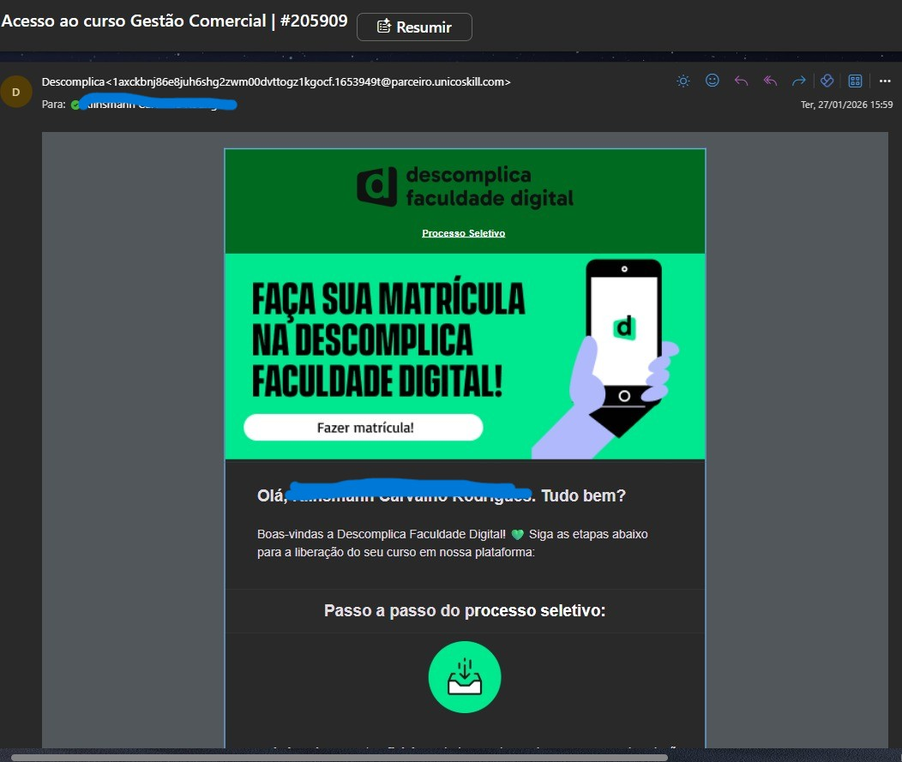

A Descomplica envia automaticamente um e-mail ao colaborador
contendo todas as instruções necessárias para realização da matrícula,
incluindo o passo a passo completo do processo.
É enviado um e-mail parecido com o da imagem abaixo, que contém mais informações:

Graduação — Matrícula confirmada, mas sem acesso
Quando a matrícula estiver confirmada na Skill, mas o colaborador
informar que não recebeu os dados de acesso:
- Pergunte se o colaborador recebeu algum e-mail da instituição com as orientações. Caso ele não tenha recebido, monte uma macro e envie os dados de acesso padrão para graduação:
link para o processo seletivo: https://processo-seletivo.descomplica.com.br/comecar
esse é o CUPOM de desconto que você deve informar na hora do pagamento: UGPASS100DXP
Esse acesso é feito apenas para Graduações.
Graduação — Processando compra
- Caso esteja aguardando confirmação de matrícula olhem a data que ele solicitou, e pergunte se ele recebeu algum e-mail da descomplica com intruções para seguir com a matrícula.
- Se ultrapassou os 15 dias e ele não recebeu nenhuma informação, abram chamado N2.
- Em certos casos, a matrícula pode ser cancelada devido a falta do envio de documentação ou outras informações, caso seja canceldo pela instituição por esse motivo o colaborador pode solicitar a incrição em um outro curso ou no mesmo, pois a categoria está liberada. Explique que por falta de algumas documentações e informações exigidas dentro do prazo, a instituição cancelou e por isso não será possível dar sequencia nesse pedido.
Pós-graduação — Processo via link único
Para cursos de pós-graduação, a Descomplica disponibiliza
um link único contendo todas as instruções de matrícula.
É importante orientar o colaborador a concluir todo o processo
de uma única vez.
- Caso o processo seja interrompido e retomado posteriormente, o link pode apresentar erro ou ficar indisponível, pois é gerado uma única vez.
-
Se o colaborador informar que recebeu o acesso, mas não conseguiu concluir
a matrícula, devido a algum erro, solicite prints do erro apresentado e confirme por onde ele recebeu o e-mail com o link.
- Em casos assim faça testes de navegador, dipostivo ou aba anônima, caso ainda falhe, abra um chamado N2
Cancelamento — Descomplica
O cancelamento de cursos da Descomplica ocorre normalmente, sem restrições.
Após a conclusão do cancelamento, a categoria correspondente ficará
desbloqueada para novas solicitações do colaborador.